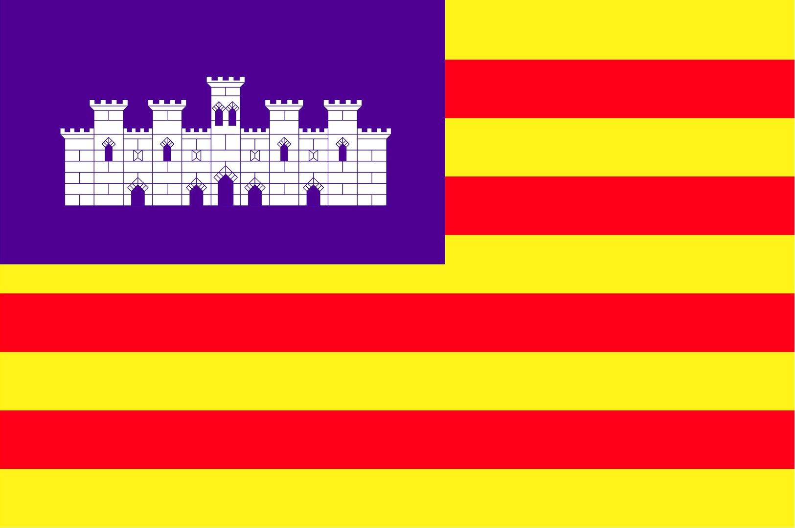
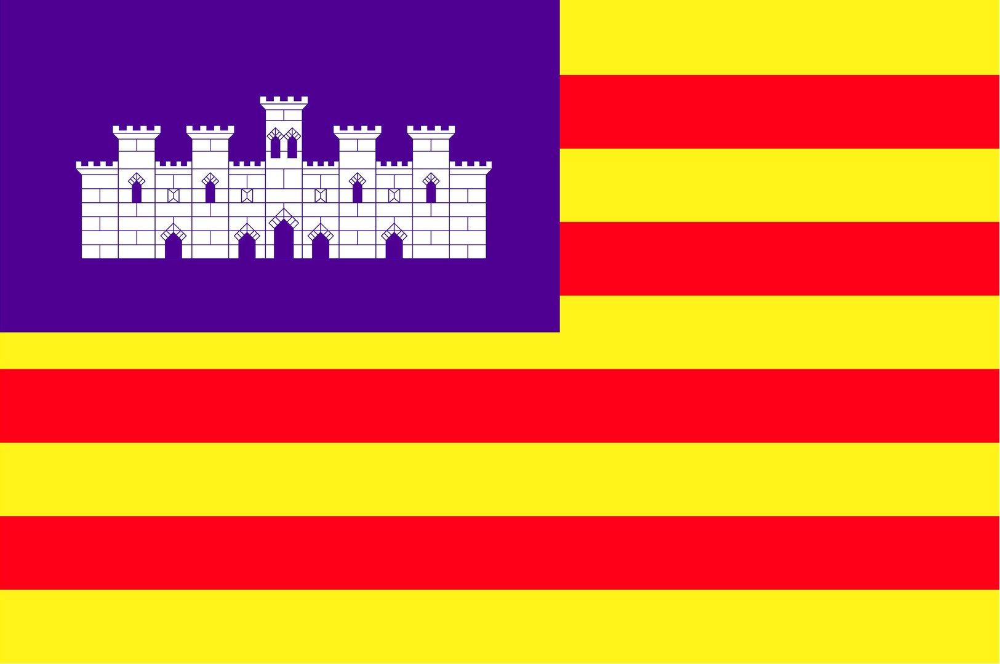

Al contrari del Modernisme, és el pacte entre la burgesia i els escriptors la policia i els escriptors la burgesia i la monarquia els escriptors i la monarquia , alguns dels quals participaren en política, i la burgesia, per tal d'aconseguir que la cultura en català sigui assumida i protegida per les institucions públiques.
Modernisme i Noucentisme comparteixen aquests objectius: europeisme, reforma ortogràfica i gramatical, defensa del parnassianisme i del simbolisme, rebuig de les idees estètiques del segle d'Or XV XVIII XIX
En canvi, els noucentistes s'oposen als modernistes en els aspectes següents:
L'ideari del Noucentisme, creat per Eugeni d'Ors Jacint Verdaguer Ausias March Narcis Oller , es basa en:
Etapes del Noucentisme:
 @Cat-Univers
@Cat-Univers 
